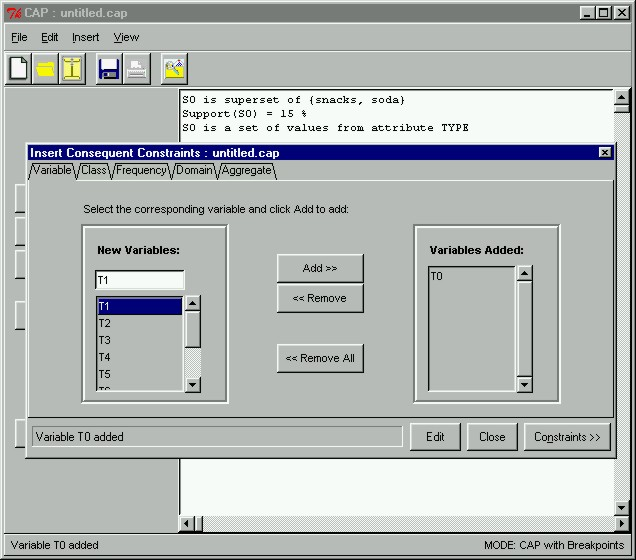

 |
Creating Consequent ConstraintsNow, we will create consequent constraints on the data to be mined. To open the Insert Consequent Constraints window, we click on the Consequent Constraints button in the main window. Here we are selecting "T0" as the set variable to represent the consequent.
|